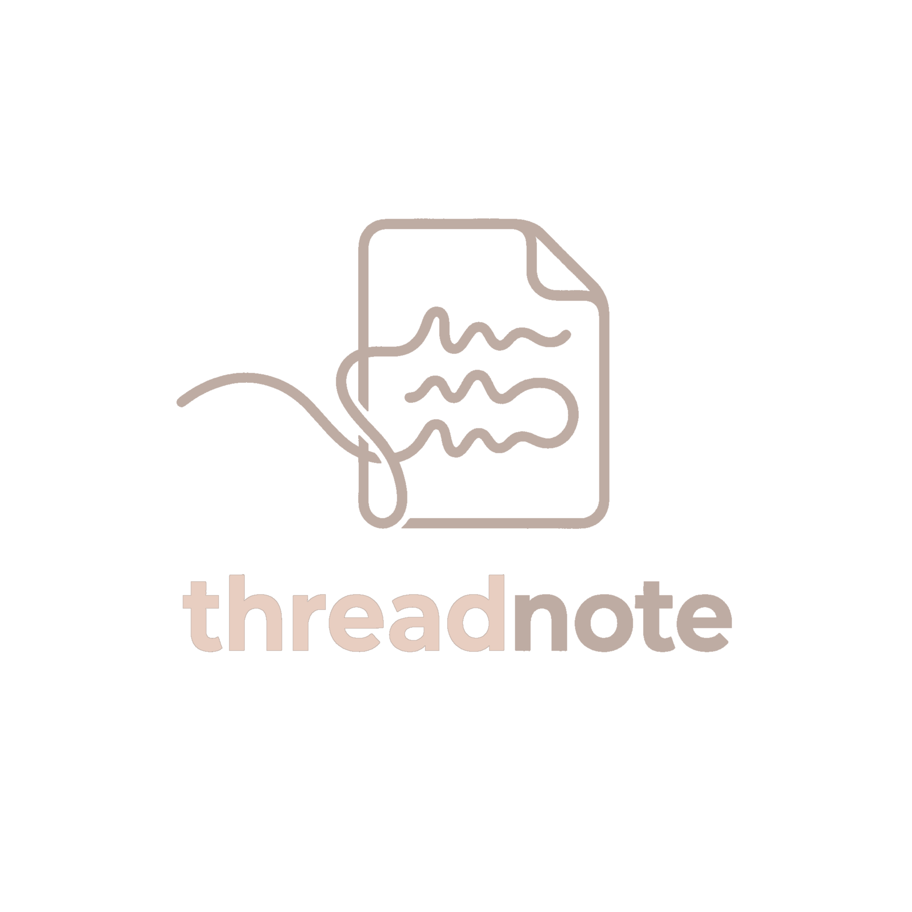
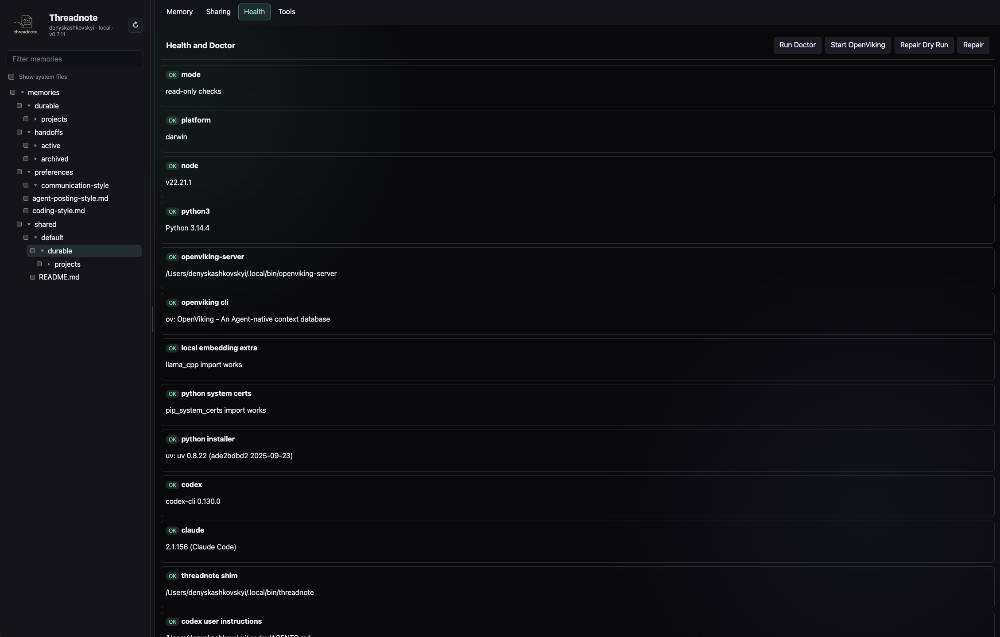

Shared local context
for development agents.
One memory layer Codex, Claude, Cursor, and Copilot all see. Durable feature knowledge, recent handoffs, and team-shared decisions — recallable from any session, on any agent, in any worktree.
Agent context is ephemeral. You aren't.
Every new session your agent starts from zero. You re-explain the same architecture, repaste the same handoff, and rediscover the same gotchas. Across four different agents this multiplies.
- Conversation history evaporates. Compaction summarizes; the nuance is lost.
- Each agent has its own memory. Switching from Codex to Claude means starting over.
- CLAUDE.md/AGENTS.md is per-repo and static. It can't carry an in-flight feature's design decisions across sessions, much less across agents or repos.
- Hand-typed handoffs rot. The next session needs them, but you only remember to write them half the time.
- Team knowledge stays in DMs. Decisions made in Slack thread #1842 don't reach your teammate's agent.
A safe local memory layer for the agents you already use.
Threadnote sits between your agents and a local OpenViking store. One stdio MCP adapter, one URI scheme, one set of commands. Everything stays on your machine until you explicitly publish it.
One memory, four agents
Codex, Claude Code, Cursor, and Copilot all recall and write into the same OpenViking store via the threadnote MCP adapter.
Survives compaction
After the context window fills up, the next turn recalls durable feature memories and the latest handoff instead of relying on the compressed summary alone.
Durable vs handoff
kind: durable for facts that should outlive a session. kind: handoff for
current work logs. One stable file per project/topic; updates replace rather than
accumulate.
Yours, on your machine
Nothing leaves ~/.openviking unless you explicitly share publish a curated
memory to a team git repo. No telemetry, no SaaS, no network egress.
Use them. Threadnote is not a replacement.
They are perfect for stable, canonical, version-controlled rules. They are wrong for living context — what happened in the last session, which branch is mid-refactor, which on-call workaround actually shipped.
CLAUDE.md · AGENTS.md · Cursor rules
- Where it lives: in the repo, versioned, shared via PR.
- Best for: coding standards, test commands, review rules, architecture invariants.
- Read pattern: loaded into every agent context window in this repo.
- Edit cost: human writes; PR review; high friction (which is the point).
- Lifecycle: long-lived. Stale entries hurt every session.
Threadnote
- Where it lives: local OpenViking store, cross-repo, cross-agent. Optionally published to a team git repo.
- Best for: feature knowledge, handoffs, branch state, prod-on-call findings, personal workflow facts.
- Read pattern: recalled on demand; only the relevant URIs enter the context window.
- Edit cost: agents write; humans guide; low friction by design.
- Lifecycle: durable / handoff / archived. Compact in place, never accrete.
The split: put repo policy in the .md files. Put feature history, in-flight task state, handoffs, and personal workflow facts in threadnote.
One MCP adapter, one URI scheme, one local store.
viking://user/<you>/... is the same
pointer from every session.
Local by default. Explicit when it isn't.
Threadnote is designed for an environment where agents write to your memory. The defaults assume that's untrusted and that mistakes happen.
Writes stay on disk
Every remember / handoff writes under THREADNOTE_HOME (defaults
to ~/.openviking). Nothing leaves the machine without explicit user action.
Manifest-scoped seeding
threadnote seed imports only paths declared in a seed manifest. It does not index whole
repos. The default patterns target CLAUDE.md, AGENTS.md,
SKILL.md, and docs/**.
Built-in ignore + redaction
.threadnoteignore excludes build output, binaries, env files, and logs. Known config files
(.mcp.json, config.toml, settings JSON) pass through a redactor before import.
Secret-pattern scrubber
Candidate files are skipped if common token shapes survive redaction. The
share publish path refuses to push memories that contain PEM keys, sk-… /
github_pat_… / glpat-…, JWTs, AWS keys, or Slack tokens.
Agent configs are opt-in
mcp-install <agent> prints the commands by default. Pass --apply to
actually modify Codex/Claude/Cursor/Copilot config. User-level instruction blocks are surrounded by
markers and only their managed region is rewritten.
No half-published state
share publish writes, commits, and pushes the shared copy before removing the personal
source. A git failure leaves the original memory in place with an actionable error.
One command. Then point your agents at it.
The installer wires up the npm package, the OpenViking Python environment, and the local server. After that,
mcp-install per agent and you're done.
1. Install threadnote
$ curl -fsSL https://raw.githubusercontent.com/Kashkovsky/threadnote/main/scripts/install.sh | sh Installed threadnote@1.0.0 Already exists: ~/.local/bin/threadnote OpenViking installs into Python; neither uv nor pipx is on PATH so threadnote would fall back to `pip install --user`, which fails on PEP 668 setups. Install uv now? [Y/n] Y Installing uv via Homebrew… OK openviking 0.3.24 ready · server healthy
Or manually: npm install -g threadnote && threadnote install. On a fresh macOS / modern
Linux machine the installer offers to brew install uv for you (avoids PEP 668 errors).
2. Wire up each agent (pick what you use)
$ threadnote mcp-install codex --apply $ threadnote mcp-install claude --apply $ threadnote mcp-install cursor --apply $ threadnote mcp-install copilot --apply Installed MCP server `threadnote` for codex, claude, cursor, copilot. Restart agent sessions to pick up. $ threadnote doctor --dry-run Summary: 0 failure(s), 0 warning(s)
Without --apply, each command prints a dry run so you can review before changing your agent
configs. Run doctor anytime to verify.
Open a fresh agent session after installing MCP — the tool list reloads at session start.
Pull just the curated docs into recall.
Threadnote does not index whole repos. Instead, point it at a seed manifest of paths you actually want
agents to recall — typically AGENTS.md, CLAUDE.md, repo docs, and
SKILL.md guidance.
Generate a manifest
$ threadnote init-manifest \ --repo ~/src/web-app \ --repo ~/src/mobile-app Wrote ~/.openviking/seed-manifest.yaml (2 project(s)) $ threadnote seed Imported 47 curated path(s); skipped 6 secret-flagged. $ threadnote seed-skills Imported SKILL.md catalog from Codex, Claude, repos.
What the manifest looks like
version: 1
projects:
- name: web-app
path: ~/src/web-app
uri: viking://resources/repos/web-app
seed:
- AGENTS.md
- CLAUDE.md
- docs/**/*.md
- .claude/skills/**/SKILL.md
- name: mobile-app
path: ~/src/mobile-app
uri: viking://resources/repos/mobile-app
seed:
- AGENTS.md
- docs/**/*.md-
Recall is smart enough to scope by query. Ask "web-app durable feature memories" and
recall prefers
viking://resources/repos/web-appfirst. -
Seeding is opt-in and re-runnable.
threadnote seednever deletes; it upserts. -
Skills are a first-class catalog.
seed-skillsmakes reusable workflows discoverable: testing, release, on-call, debugging, plugin guidance.
Always one command from a clean state.
Routine update
$ threadnote update Latest: threadnote@1.0.0 (installed: 0.7.12) Running: npm install -g threadnote@1.0.0 Running: threadnote repair All checks passed. Restart agents to reload MCP.
update --check reports what's available. update --dry-run shows the plan.
Releases may include post-update memory migrations that prompt before applying.
Repair after a moved checkout
$ threadnote repair OK threadnote shim: ~/.local/bin/threadnote OK codex / claude / cursor / copilot user instructions OK manifest, ignore file, templates OK openviking health Summary: 0 failure(s), 0 warning(s)
Rewrites the threadnote shim and every agent's MCP config to point at the current install. Run after deleting an old npm prefix or moving the package between Node versions.
Durable. Handoff. Archived.
Three lifecycle states, one stable URI per project/topic. Updates replace, never accrete.
Long-lived feature knowledge
Design decisions, API contracts, gotchas, intended behavior. The kind that should outlive a session and
travel across agents. Default for threadnote remember.
Current work logs
Repo, branch, files touched, tests run, blockers, next step. The kind your next agent recalls first.
threadnote handoff captures git state automatically.
Provenance only
Old handoffs that helped at the time but shouldn't be current working context.
archive moves them out of the active recall scope; --include-archived still
finds them.
One file per project/topic
# Capture an in-flight feature memory and its current handoff side by side:
threadnote remember \
--kind durable --project web-app --topic auth-token-refresh \
--text "Architecture: provider-only token client, JWT helpers in jwt.ts..."
threadnote handoff \
--project web-app --topic auth-token-refresh \
--task "Address reviewer comments on token refresh PR" \
--tests "make lint-lite; mocha auth_client_test 77 passing" \
--next-step "Push and request re-review"
# Later, update the durable memory in place (no timestamped duplicates):
threadnote remember \
--kind durable --project web-app --topic auth-token-refresh \
--replace viking://user/<you>/memories/durable/projects/web-app/auth-token-refresh.md \
--text "..."Curated memories. Yours to push. Theirs to pull.
threadnote share publishes a subset of durable memories into a git repo so other engineers'
agents can recall them. Personal handoffs, preferences, and unpublished durables always stay local.
One-time setup
$ threadnote share init git@github.com:org/team-memories.git Cloned into ~/.openviking/data/.../memories/shared/default/ Ingested 12 shared memory file(s) into OpenViking. Added .gitignore exclusions for OV directory summaries.
Working tree lives inside the OV data tree so recall sees it. The git directory is moved aside via
--separate-git-dir so OV never sees git internals.
Publish a durable memory
$ threadnote share publish \ viking://user/<you>/memories/durable/projects/<p>/<t>.md Scrubber: no secret patterns detected. git commit -m 'share: publish durable/projects/<p>/<t>.md' Published. Pushed to origin/main.
Refuses to publish if the memory matches secret patterns (PEM, sk-, gh*_,
github_pat_, glpat-, JWTs, AWS keys, Slack tokens). Refuses to silently
overwrite an existing shared URI; update shared memories with remember --replace.
Teammates' updates auto-sync
$ recall_context({query: "shared feature memory"}) → viking://user/you/memories/shared/default/durable/projects/<p>/<t>.md Auto-synced shared memories: default Recall now finds new shared memories alongside personal.
The MCP server periodically fetches share repos and syncs clean incoming updates before
recall_context or read_context returns. Manual
threadnote share sync is still there for dirty worktrees, conflicts, explicit pushes, or
immediate operator control.
Take it back
$ threadnote share unpublish <shared-uri> Wrote back to personal namespace. git rm + commit + push.
The publish flow is transactional: if removing the personal copy fails after the shared write, the shared write is rolled back. You never end up half-published.
-
Only
durable/memories are shareable. Handoffs, preferences, incidents, and everything else stays local by construction. -
Concurrent-publish safe. If two teammates publish the same
project/topicat the same time, the retry path won't silently overwrite the other's write. -
MCP-native too. Agents can call the
share_publishtool directly when they decide a memory is teammate-worthy.
A local web UI for the whole memory store.
Prefer a UI to the CLI? threadnote manage serves a local React app on
127.0.0.1 with a per-session token. Browse the tree, edit Markdown, run health checks, and
manage shares — everything it does, the CLI and MCP do too.

Browse & edit the tree
Resizable, filterable navigation. Markdown preview by default, raw edit on demand, and confirmation-gated bulk archive / publish / forget that never silently targets filtered-out files.
Doctor on open
The default tab runs doctor automatically. Run Doctor, Start OpenViking, and Repair stream
into a scrollable output pane — the view in the screenshot above.
Team repos, no CLI
Status, publish, sync, rename, set-url, remove, and preserve-local — full parity with
threadnote share.
Recall, compact, consolidate
Recall and read, scoped compaction dry-runs, import/export packs, seeding, and AI-assisted consolidation drafted by a local Codex or Claude CLI then applied on confirm.
What you say. What the agent does.
You don't run threadnote commands yourself. You talk to your agent the way you already do; the agent calls the MCP layer and the memory stays in sync across sessions, agents, and teammates.
recall_context({query: "<branch> latest handoff durable feature memory"})
→ viking://user/you/memories/handoffs/active/<repo>/auto-precompact.md → viking://user/you/memories/durable/projects/<repo>/<feature>.md
remember_context({kind: "handoff", project: "<repo>", topic: "<feature>", text: "..."})
Stored: viking://user/you/memories/handoffs/active/<repo>/<feature>.md
share_publish({uri: "viking://user/you/memories/durable/projects/<repo>/<feature>.md"})
Published → shared/<team>/durable/projects/<repo>/<feature>.md git push: ok
remember_context({kind: "handoff", project: "<repo>", topic: "auto-precompact", text: "..."})
Stored: viking://user/you/memories/handoffs/active/<repo>/auto-precompact.md
remember_context({kind: "durable", project: "<repo>", topic: "release-process", text: "..."})
Stored: viking://user/you/memories/durable/projects/<repo>/release-process.md
recall_context({query: "export workflow timeout findings"})
→ viking://user/you/memories/durable/projects/<repo>/export-timeout.md (score 0.71)
Try it on your machine in 90 seconds.
curl -fsSL https://raw.githubusercontent.com/Kashkovsky/threadnote/main/scripts/install.sh | sh
threadnote mcp-install codex --apply # or claude / cursor / copilot
threadnote doctor --dry-run
threadnote · AGPL-3.0-or-later · built on OpenViking 0.3.24 · use ↑ ↓ / j k to navigate